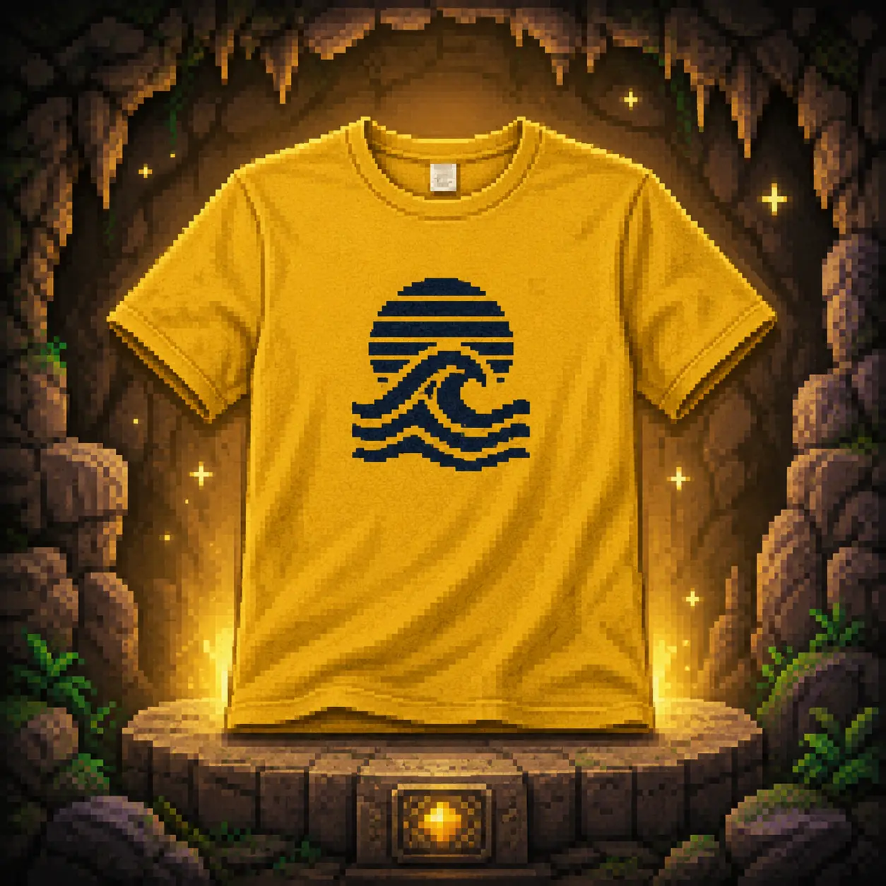
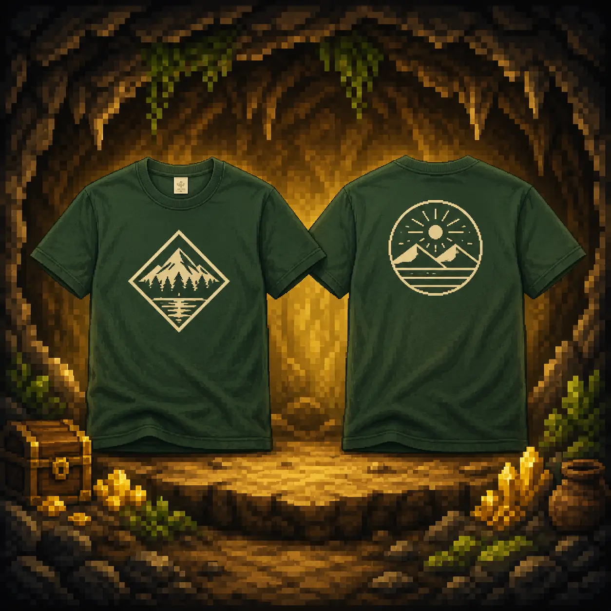

SAMPLE QUEST 01
10枚・片面1色
18,200円（税別）少人数のチームやお店のスタッフウェアを想定した基本例です。
- カラーTシャツ
- 720円 × 10枚＝7,200円
- 1色プリント・1か所
- 300円 × 10枚＝3,000円
- 製版代・1版
- 8,000円
プリントイメージを使い、枚数・加工・製版を含む参考価格を紹介します。
少人数のチームやお店のスタッフウェアを想定した基本例です。

部活・イベント・サークルで同じデザインをまとめて作る基本例です。

左胸と背中など、2か所へ別デザインを入れるチームウェアの基本例です。
同じデザインをまとめて作るほど、1枚あたりの加工料金を抑えやすいプリント方法です。
← 表は横にスクロールできます →
| 加工内容 | 1〜9枚 | 10〜99枚おすすめ | 100枚以上 |
|---|---|---|---|
| 通常色プリント1色・1か所 | 800円 | 300円 | 200円 |
| 特色インクゴールド・シルバーなど | 通常色＋150円 | 通常色＋150円 | 通常色＋150円 |
色数が増える場合2色なら製版2版＋プリント2色分、3色なら製版3版＋プリント3色分です。
箇所が増える場合左胸と背中など、位置やデザインが異なる場合はそれぞれ製版代と加工代が必要です。
数量の数え方同じデザイン・同じ色・同じ位置の合計枚数で、1枚あたりの加工単価が決まります。
※すべて税別。通常サイズ・通常素材の目安です。大判、袖、特殊素材、1,000枚以上は個別にお見積もりします。
写真・グラデーション・細かい多色デザインを、製版代なしでフルカラー転写できる方法です。
← 表は横にスクロールできます →
| サイズ | 1枚 | 2〜9枚 | 10〜99枚おすすめ | 100〜299枚 | 300〜999枚 |
|---|---|---|---|---|---|
| 10cm×10cm左胸・ワンポイント | 2,200円 | 1,200円 | 650円 | 550円 | 500円 |
| A4約21×29.7cm | 3,000円 | 2,000円 | 1,600円 | 1,500円 | 1,450円 |
| A3約29.7×42cm | 4,500円 | 3,500円 | 2,400円 | 2,300円 | 2,250円 |
同じデザイン・サイズ・プリント位置の合計枚数で単価が決まります。1,000枚以上は個別にお見積もりします。
カラー綿Tシャツ10枚へ、前面1か所をプリントした場合で比較できます。一般的なMサイズ相当のTシャツに、実寸比率を合わせて掲載しています。

左胸のロゴやワンポイントに。

胸中央や背中の標準的なサイズに。

背中や前面へ大きく見せたいデザインに。
前と後ろに入れる場合前面と背面は別のプリント箇所です。それぞれのサイズの加工代が必要です。
数量の数え方同じデザイン・同じサイズ・同じ位置の数量で計算します。個人名や背番号が異なる場合は別計算です。
見積もり例の範囲Tシャツ本体とプリント加工を含みます。送料・大きいサイズ・デザイン調整は別料金です。
※すべて税別。デザインの面積を基準に適用します。1,000枚以上、特殊素材、スウェット・パーカー・ブルゾン等は個別にお見積もりします。
ウェアホワイト・カラー・ドライ・厚手・大きいサイズで変わります。
プリント色数、箇所、サイズ、特色インク、デザイン調整で変わります。
別途費用送料・個別包装などは、必要な場合にお見積もりします。
※上記はカラーTシャツ・通常色のシルクスクリーンを想定した2026年8月時点の参考価格です。正式な金額は仕様とデータを確認後にご案内します。
枚数やデザインが決まっていなくても大丈夫です。分かる項目だけで相談できます。
無料見積もりへ進む ▶裏公式LINEで相談する▶